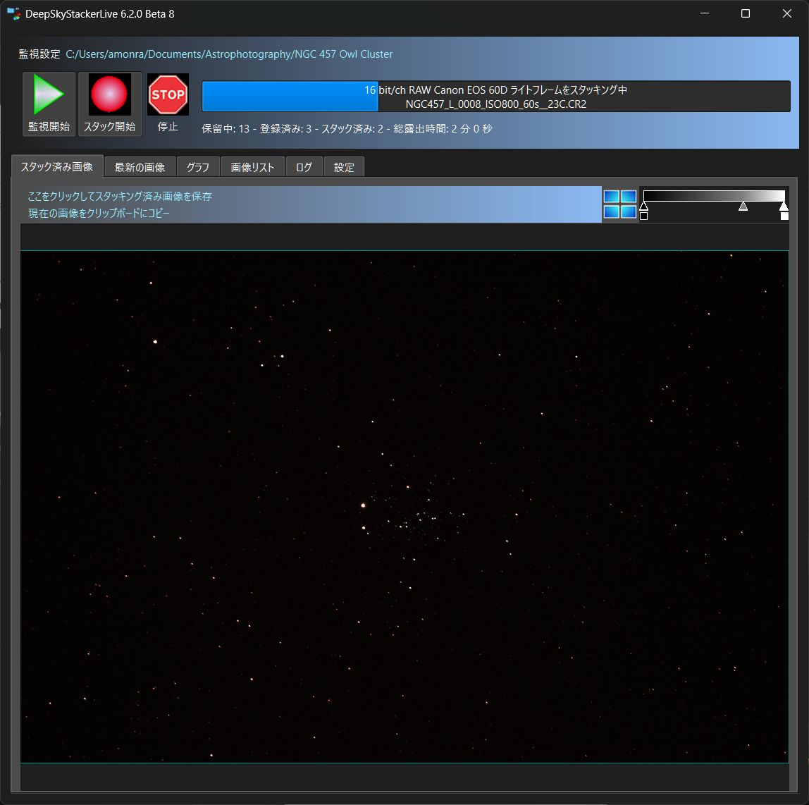
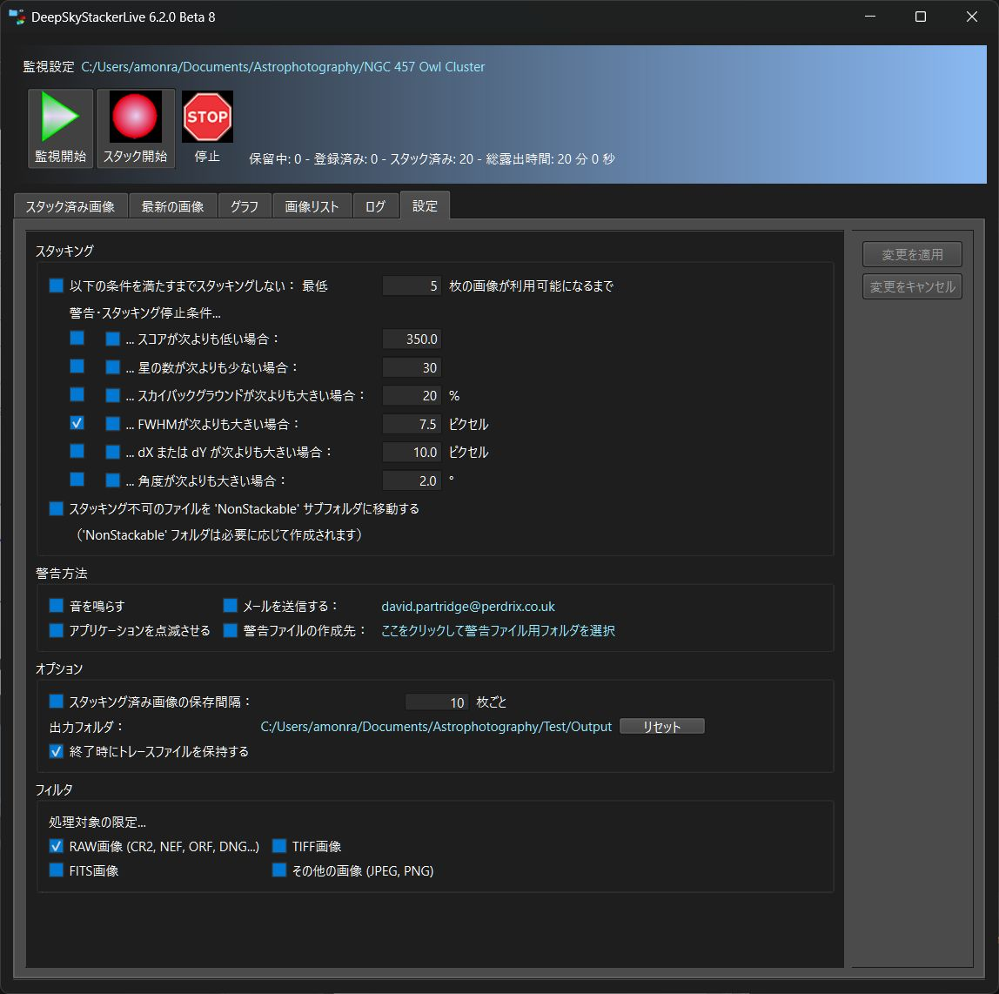

DeepSkyStacker Live ユーザーマニュアル
はじめに
DeepSkyStacker Live とは？
DeepSkyStacker Live は、撮影セッション中に現場で使用し、以下のタスクを実行できるように設計されています。
DeepSkyStacker Live は、キャプチャされた画像がフォルダに保存され、認識されたファイル形式（FITS、TIFF、JPEG、およびほとんどのデジタル一眼レフのRAW画像）であれば、あらゆるキャプチャデバイス（デジタル一眼レフ、CCDカメラ）およびあらゆるソフトウェアと互換性があります。
補足： DeepSkyStacker Live は DeepSkyStacker の代わりになるものではありません。
これらは同じエンジンを使用していますが、DeepSkyStacker Live には、正確に後処理できる画像を作成するために必要な機能がすべて揃っているわけではありません。
たとえば、画像のキャリブレーション（ダークおよびバイアス減算、フラット除算）を行ったり、最も高度なスタッキング方法（カッパシグマや適応加重平均など）を DeepSkyStacker Live で使用したりすることはできません。
DeepSkyStacker Live ユーザーインターフェース
|
DeepSkyStacker と同様に、DeepSkyStacker Live のユーザーインターフェースは非常にシンプルで直感的であり、すべての主な機能とコマンドをすぐに利用できます。
最後のタブは、DeepSkyStacker Live の動作を制御するパラメータを設定するために使用されます。
|
 |
クイックスタート
夜間の撮影セッション用にお使いのノートパソコンが準備され、CCDまたはデジタル一眼レフのキャプチャソフトウェアが起動して実行されています。
DeepSkyStacker Live を起動し、「スタック」ボタンをクリックして、監視するフォルダを選択します。これだけです！
これ以降、監視対象のフォルダに作成されたすべての画像は、設定タブで設定した特定の条件に一致しない限り、レジストレーション、位置合わせ、およびスタックされます。
もちろん、DeepSkyStacker Live が受信ファイルを監視している間でも設定を変更できます。
設定
まず、DeepSkyStacker Live は、画像のデコード、星の検出閾値、位置合わせ方法、および背景キャリブレーションオプションに関するすべての設定を DeepSkyStacker と共有しています。これらの値を変更するには、DeepSkyStacker を使用する必要があります。
唯一の違いは、AHDとBayer Drizzleが自動的にバイリニア補間に変換されることです。
設定タブは、入力された画像をスタックするタイミング、警告を発するタイミング、および警告の発行方法を定義するために使用されます。

スタッキングオプション
少なくとも xxx 枚の画像が利用可能になるまでスタックしない
このオプションは、参照フレームとして使用する画像を決定する前に、最小限の画像枚数が揃うのを待つために使用されます。
最小限の画像枚数が利用可能になると、DeepSkyStacker Live は最もスコアの高い画像を参照フレームとして使用します。
このオプションは、短い露出で撮影していて、すべてのライトフレームが十分に良好であるかどうかわからない場合に特に役立ちます。
警告/スタックしないオプション
これらのオプションは直感的で、画像をスタックしない、および/または警告を発するべきさまざまな条件を設定するために使用できます。
以下の条件を設定できます：
スコア
検出された星の数
FWHM（半値全幅）
ドリフト（dX または dY）
回転角
空の背景
警告
警告条件が検出された場合、以下の4つの異なる方法で通知を受け取ることができます。
サウンド：コンピュータのクラシックなビープ音
アプリケーションのフラッシュ：DeepSkyStacker Live が4回点滅します
警告ファイルの作成：警告メッセージを含む DSSLiveWarning.txt という名前のファイルが、選択したフォルダに作成されます。これはローカルフォルダでもネットワークフォルダでも構いません。ファイルがすでに存在する場合は、新しい警告メッセージが追加されます。
メールの送信：警告メッセージを含むメールが指定したアドレスに送信されます。
メール設定ダイアログボックスで、最初の警告に対してのみメールを送信するように選択できます。この場合、メールが送信されるとすぐに、メールの内部カウンターをリセットするためのリセットボタンが表示されます。
スタック画像の作成
スタックされた画像はメモリ内でのみ作成され、デフォルトでは保存されません。
このオプションを使用すると、xxx 枚の画像がスタックに追加されるたびに、スタックされた画像を含むファイルを作成できます。
スタックされた画像は、選択したフォルダに Autostack.tif という名前のファイルとして保存されます。ファイルがすでに存在する場合は上書きされます。
常に16ビットのTIFF画像であり、入力される画像に応じてカラーまたはグレースケールになります。
グラフ
各画像について、DeepSkyStacker Live は以下のシンボルを使用します：
処理された各画像に対する緑色の円
緑色の円の後ろにあるオレンジ色の円：警告条件が満たされたことを示します
緑色の円の上にある赤色の三角形：スタックしない条件が満たされたことを示します
dX/dY および角度グラフで参照フレームを表すために使用される緑色の四角形
dX/dY グラフについて：赤い線は dX を表し、青い線は dY を表します。
画像をスタックできない場合、dX/dY および角度グラフには表示されません。
技術情報
DeepSkyStacker Live は平均スタッキング方法を使用します（これは、画像の枚数が事前にわからない場合に使用できる唯一の方法です）。
キャリブレーションは不可能なため、スタックする前に、入力されたライトフレームに対して単純なホットピクセル検出と除去が使用されます。
「最後の画像」タブでホットピクセルを確認できますが、スタックされた画像からは削除されるはずです。
DeepSkyStacker とは異なり、DeepSkyStacker Live は、複数のプロセッサが利用可能な場合でも、すべてのバックグラウンドタスク（読み込み、登録、スタック）に単一のプロセッサのみを使用します。